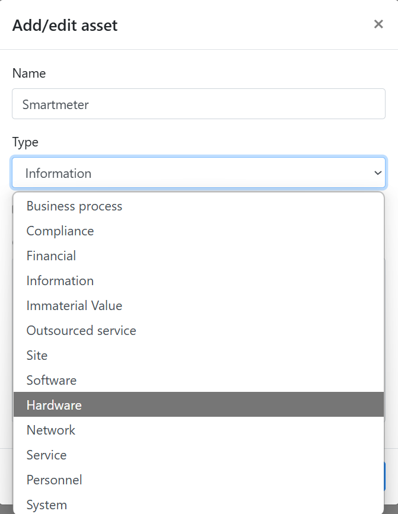
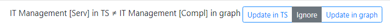
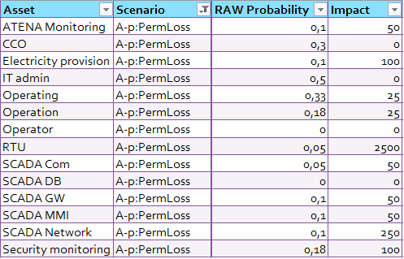

The Trick Service DRAW (Dependencies for a Risk Analysis on a WhiteBoard) user guide introduces the user to all functionalities of the application.
The DRAW tool is open source by itrust consulting and is used to represent assets and their corresponding dependencies in a graphical manner.
The assets are represented as nodes in the graph and the dependency is represented using an edge from one asset to another. The asset carries information of the name
of the asset and its type example the asset may be a Financial, Business process etc. The edge carries the dependency information and also the probability information.
Probability implies the chances that an asset impacts the other asset.
As an example if there is an edge between Server to Server Data it implies that a problem at Server might cause a problem with Server Data.
Furthermore this tool can also be synchronised with Risk Analysis Tool (TrickService) tool to synchronize asset names, asset types etc.
After connecting to the TRICK Service DRAW URL (https://draw.trickservice.com), the user sees the home screen with the interface that looks as:
TRICK Service DRAW inteface.
Given the Home screen the user has the possibility to carry out a set of operations.
Each of these operations are explained in sub-sections.
In order to create a dependency graph the user needs to add assets by specifying the name and the type of asset. Further
the user needs to add edges between the nodes of the graph.
Add Assets
In order to add an asset click on the Add asset icon in the main menu. Specify the Name and Type information [Figure].

TRICK Service DRAW Add Asset inteface.
Set Dependency Between Two assets
In order to set dependency between two assets, select the source asset, hold the mouse when an edge appears and then drop it on to the dependent asset.
This creates an edge from source asset to the dependent asset.
Edges are typically directed from Right to Left. ie. from supporting assets to the primary assets.
The default impact Probability is assumed to be 1 between two assets which are connected by an edge.
However this probability can be modified by clicking on the edge and specifying probability other than 1 (acceptable values between 0-1).
TRICK Service DRAW Dependency between Assets.
Edit the dependency graph
Once the dependency graph is created it can be modified in following ways:
Modify the name and type of asset: Double click on the asset node to open the edit interface.
Modify the probability of the edge: Double click on the edge to modify the probability.
Add or delete a new asset: Select the asset(s) and use DEL key.
Add or delete an existing edge: Select the edge(s) and press DEL key.
Save the existing dependency graph
Once the dependency graph is created it can be saved using the Save main menu option.
The graph can be saved in three formats. (see [Section] for more details)
JSON format:By default the graph is saved in a json format. The default file name of the file is graph.jsonThis can be achieved by clicking on Save main menu option
PNG format:The graph can be saved/exported in PNG format by selecting Export as picture(PNG) from the drop down menu on right of Save main menu option.
EXCEL format:The graph can be saved/exported in EXCEL format by selecting Export as excel(XSLS) from the drop down menu on right of Save main menu option. The saved excel file shall contain a sheet called Dependency. The matrix in this sheet represents an edge between source and target assets. If the matrix with edge contains a number this number shall represent probability of impact.
TRICK Service DRAW Saving a Graph
Open an existing dependency graph
A dependency graph once saved as json/excel file can be opened using the Open main menu option for viewing or further editing. The supported filename extensions are .json,.xlsx,.xls,.xlsm.
Align the dependency graph
The dependency graph can be aligned using the alignment tools represented in [Figure].
TRICK Service DRAW Undo/Redo and Alignment tools
Import an existing dependency graph
A dependency graph can also be imported from an excel sheet into the DRAW Whiteboard.
During the import the existing DRAW graph on the whiteboard is not cleared but updated with the additional assets
and dependencies from the imported dependency sheet.
The specification of such an excel sheet representing the asset dependency is as below:
The excel sheet shall have a worksheet named Dependency
The Dependency sheet shall represent the Dependency Matrix of all the assets.
There shall be two mandatory column headers AssetList, AssetType.
The AssetList header shall be in any cell in the first column of the sheet.
The AssetType column shall be on the immediate right of AssetList and shall represent the assetType of the asset on its left.
The AssetType shall be a valid supported assetType. Refer [Figure] below.
TRICK Service Valid DRAW assetTypes
Any row(s) above the column names AssetList shall be ignored.
AssetList shall be present in the first column in any row.
The column AssetList shall contain all the valid assets (representing Source Assets)
The column headers to the right of AssetType shall contain a subset of valid assets (representing Target Assets)
An intersection of row Source Asset -> column Target Asset shall be a real number (between 0 and 1 both inclusive) representing
the dependency from Source Asset to Target Asset. This number shall represent probability of impact.
If the intersection contains 0 or no value it shall imply that Source Asset is not dependent on the corresponding Target Asset.
In order to map graph assets with Source assets in Dependency sheet both asset names and their corresponding asset types shall be considered.
In case the graph already contains an edge between a source asset and a target asset then following rules shall apply:
If the intersection of source asset with target asset in the matrix contains a value 0 or unspecified then the edge in the graph between the
source and target asset shall be removed
If the intersection of source asset with target asset in the Dependency sheet contains a value which is different from the existing probability
of edge between source and target then the probability shall be updated with the new probability from the Dependency sheet
Refer Example below:
The DRAW graph shall be created using 3 assets
Asset1 with Type as Business process
Asset2 with Type as Compliance
Asset3 with Type as Financial
The column (AssetNE) shall be ignored for asset mapping since it is not present in the AssetList Column
The rows 1, 2, 3 shall be ignored.
There shall be two dependencies in the Graph.
Asset2 depends on Asset3 with probability (0.5)
Asset3 depends on Asset1 with probability (1)
In case of any error an error dialog box is opened redirecting the user of appropriate corrective measure.
TRICK Service DRAW Import excel ExampleTRICK Service DRAW Import excel Example Graph
NOTE: Template of a sample excel file can be downloaded here.
Supported formats of exported file
DRAW supports three file formats JSON, PNG and EXCEL to represent and save the asset dependency.
TRICK Service Saving in JSON/PNG/EXCEL format
JSON:
The default supported format for loading and saving DRAW graph is JSON. The graph can be saved in JSON format by clicking Save option from main menu. Refer [Figure]
The JSON file contains nodes and edges. The nodes contains the list of nodes in the graph.
Each node carries following information:
id: Representing graph identifier
name: Representing asset name
type: Representing the asset type Following is the list of supported asset types:
Business process
Compliance
Financial
Information
Immaterial Value
Outsourced service
Site
Software
Hardware
Network
Service
Personnel
System
disabled: True if asset is inactive/disabled
trickId: Representing trickId of the asset. The trickId is a risk assessment identifier in Trick Service application
position: Representing asset position in whiteboard. Position specifies x, y coordinates of the model position of center of asset node. This position remains same with zoom and pan of the asset node.
Each edge carries following information:
source: The id of the source asset
target: The id of the target asset
p: The probability of impact of source on target. This is a value between 0 and 1.
Default probability between connected source and target asset is 1.
The structure of JSON file can be understood using following example where there are two assets and a single edge between the two assets with probability 1:
PNG:
The DRAW graph can also be saved in PNG format. This can be done by clicking on Export as picture(PNG) option from dropdown menu right of save menu.
Excel:
The DRAW graph can also be saved in Excel format. This can be done by clicking on Export as excel(XSLS) option from dropdown menu right of save menu.
The exported excel contains the following features:
The name of exported file is "AssetDSInExcel.xsls".
The exported excel file has two sheets:
Dependency which contains the asset dependencies. The Dependencies sheet represents the DRAW graph in the same
format as that used during the Import from Excel (see [Section]);
Parameters which contains the list of valid supported assets (see [Figure]);
Coordinate with Trick service
Sync with TRICK service
The dependency graph can be synchronised with Trick Service Risk Analysis tool proprietary to itrust consulting. The Synchronize with Trick Service main menu option provides
this synchronization capability.
Upon clicking this option the user needs to choose the TrickService platform, customer , risk analysis and version number present in Risk analysis portfolio in Trick Service.
If there is any inconsistency between the current dependency graph assets and the Trick Service Assets in the selected Risk Analysis profile then the Synchronise dialog box appears and provides user options to synchronize the
the assets. There are three possibilities:
Asset exists in both DRAW and TS but the asset Types or active/inactive values are not same:
User can update the values in either Trick Service or in dependency graph. [Figure]
TRICK Service DRAW SynchronisationTRICK Service DRAW Synchronisation Add/Delete

TRICK Service DRAW Synchronisation Asset Values Different
Compare estimations with Trick Service [Beta Version]
The compare estimation feature allows the user to model and simultaneously compare the propagation of risk as defined by Trick Service.
In Trick Service the different risk scenarios are applied to all assets, and for each Scenario-Asset combination there is a likelihood
(expected value of occurence per year, called probability per year) and an impact (k€).
However each risk scenario tends to impact several assets, and it is often difficult to consider when assessing the scenario on an asset,
whether or not the cumulative or indirect impact on the given asset has been considered or not.
Hence in Trick Service risks are considered independent. However in DRAW we can model the propagation of risk using the asset dependency relationship
where each edge between two assets carries the information of propagation rate called as probability.
TRICK Service DRAW compare estimations
The Compare estimations compares the Impact/Likelihood based on DRAW propagation rates and generates a report.csv and report.html file at the end of comparison.
The user may use the generated report to revise the estimates/impacts in Trick Service to add more precision based on asset dependency.
The estimation report(s) contains tabulated report for each asset/scenario combination. The columns of these reports are described below:
Asset: This field represents the asset name.
Scenario: This field represents the corresponding scenario for the given asset.
Old Likelihood: This field represents the Likelihood for asset/scenario combination as fetched from Trick Service assessment.
New Likelihood: This field represents the Likelihood for asset/scenario combination as computed by DRAW.
This takes into account the probability of the edge from one asset to another (propagation probability) along with impact values fetched from Trick Service for
the asset/sceanrio combination. The new Likelihood is the sum total of likelihood of damage starting somewhere else and propagating at the given asset
and contributing to damage done to the given asset.
The algorithm to determine new Likelihood is a complex algorithm which determines the new Likelihood as a function of old likelihood and the probability of propagation.
This can be visualized in the Figure (see [Figure]);
Note that however a dependency graph might be large and full of cycles, so that a deterministic calculation takes enormous time.
That is why DRAW implements a probabilistic algorithm (which simulates about 1 million situations, in which propagation decisions are randomly taken,
and averages the overall result. This also explains rounding errors which in any case are less important than the uncertainty of the estimated parameters.
TRICK Service DRAW compare estimations (Likelihood computation)
Old IMPACT: This field represents the Impact for asset/scenario combination as fetched from Trick Service assessment.
New Impact: This field represents the computed impact for asset/scenario combination as computed by DRAW.
The new impact is computed based on the impacts on all assets that might be damaged as a consequence of damage starting at the given asset.
The algorithm to determine new impact is a complex algorithm which determines the new impact as a function of old impact and the probability
of propagation of impacted assets.
This can be visualized in the Figure (see [Figure]);
Note that however a dependency graph might be large and full of cycles, so that a deterministic calculation takes enormous time.
That is why DRAW implements a probabilistic algorithm (which simulates about 1 million situations, in which propagation decisions are randomly taken,
and averages the overall result. This also explains rounding errors which in any case are less important than the uncertainty of the estimated parameters.
TRICK Service DRAW compare estimations (Impact computation)
Impact on scales(s): This field represents the impact on various scales such as Financial/Privacy/Operational/Moral/Physical/Legal/Reputational/Affected Deliveries/Peronnel.
The impact scales which are included in Trick Service assessment settings are included as different columns in the report.
New Impact assessment(s): This field represents the computed Impact on corresponding scale as specified in Trick Service.
Compare estimations with Trick Service [Example]
Illustrating below using a small example of comparing estimations using DRAW:
Create an asset dependency graph in DRAW and assign propagation probability to the edges
In Trick Service estimate the direct impact on assets and direct likelihood of the scenarios
Sync asset dependency graph in DRAW with Trick Service assessment
Compare estimations of Trick Service with DRAW
Revise the estimations in Trick Service using the report generated by DRAW
The section below describes in detail each step summarised above:
Create an asset dependency graph in DRAW and assign propagation probability to the edges
Consider an asset dependency graph created in DRAW (see [Figure]) as below.
This graph can be understood as follows. The asset Chief Cybersecurity Officer (CCO), if he is attacked has 50% probability to destroy the integrity of the
Security monitoring service, and this has 50% chance to destroy the integrity of ATENA monitoring.
Similarly a manipulated RTU has 20% chance to manipulate electricity provision (creating an outage).
Note that the propagation probability is currently present only in JSON export file. These are hence
added manually to edges of the graph in figure below.
TRICK Service DRAW compare estimations (Asset Dependency)
In Trick Service estimate the direct impact on assets and direct likelihood of the scenarios
Provide estimate of assets and likelihood of impact as in table below. Note that only a single scenario is provided here for brevity, however the same may be provided for multiple
asset/scenario combinations:

TRICK Service DRAW compare estimations (Risk Estimation in Trick Service - truncated for conciseness)
Sync asset dependency graph in DRAW with Trick Service assessment
Synchronize the asset dependency graph with Trick Service assessment (see [Section])
Compare estimations of Trick Service with DRAW
Click on Compare Estimations from Sync with Trick Service menu. This will analyse the data and prepare to generate report. Once this is done click on Export button to export report.html and report.csv files.
Note you might have to provide permissions in browser to download multiple files at once.
Revise the estimations in Trick Service using the report generated by DRAW
The generated report(s) contains the old and revised estimates of likelihood, impact, financial corresponding to all combinations of assets and scenarios.
These new estimations can further be revised on Trick Service.
TRICK Service DRAW compare estimations (Generated CSV report - truncated for conciseness)
Export to TRICK service
The user has an option to save the dependency graph to TrickService. This can be done in three ways:
Export as picture on TS: The user can export the current dependency graph in PNG format to TrickService Risk Analysis.
This picture can be used in TS Word Report generated using a template which has a bookmark called TS_DependencyGraph.
Before using this option the user must ensure that the graph fits in the current DRAW WhiteBoard else the picture may appear truncated.
Export as snapshot on TS: The dependency graph can also be exported to Trick Service as a snapshot.
This snapshot can be later loaded from Trick Service risk analysis profile.
Trick Service will save this data but will not interact with it which implies that
the connections in this graph are not used to update the Trick Service asset dependency
Update dependency graph on TS: The dependency graph on Trick Service can be saved using this option.
This option will update the asset dependency graph on Trick Service.
By default the asset dependency graph in Trick Service risk analysis comprises of all the assets as unconnected nodes.
This option will update the dependency graph on trick service using the connected nodes in DRAW white board which have been
synchronized with Trick Service earlier. All unconnected asset nodes which are not synchronized with DRAW previously are ignored.
However if a connected asset node is found in DRAW which has not been synchronized with Trick Service earlier
(Implies that asset is not present in Trick Service already) will result in an error.
TRICK Service DRAW Synchronisation Export to TS
Load from TRICK service
The user has an option to load the dependency graph from TrickService. This can be done in two ways:
Load snapshot from TS: Using this option the user can also load the snapshot from Trick Service which was
saved using Export as snapshot on TS option.
Load dependency graph from TS: Using this option the user can load the dependency graph from Trick Service which was
earlier saved using Update dependency graph on TS option.